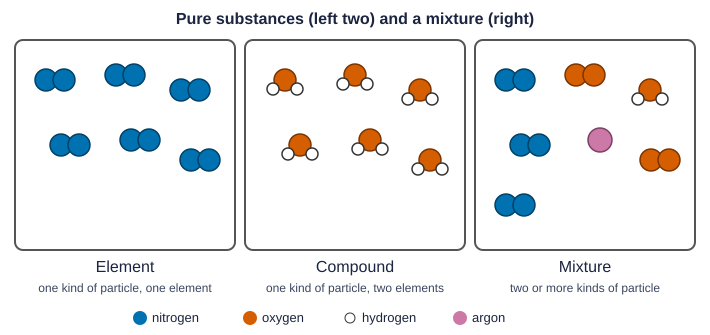

Pure substances and mixtures
The previous topic was about pure substances: elements and compounds, each with a fixed composition. Most matter around you is not pure. Air, seawater, soil, milk, steel and a vitamin tablet are all mixtures: two or more substances together, not bonded into one kind of particle, in proportions that can vary.
That last part is the key difference. Water is always 11.2% hydrogen by mass. Salt water can be 1% salt or 20% salt; it is still salt water. A compound has one recipe; a mixture can be made in any proportions.
| Pure substance | Mixture | |
|---|---|---|
| Kinds of particles | one | two or more |
| Composition | fixed (definite proportions) | can vary |
| Examples | oxygen gas, water, table salt | air, salt water, brass, granite |
Homogeneous and heterogeneous mixtures
A homogeneous mixture has the same composition throughout: every drop of salt water is as salty as every other, and you cannot see separate parts. A heterogeneous mixture has regions that differ: sand settling in water, cereal in milk, the grains in granite. Two scoops from a heterogeneous mixture can have different compositions.
Two levels: macroscopic and particulate
Chemists describe matter at two levels. The macroscopic level is what you can see and measure in bulk: color, mass, volume, whether a sample looks uniform. The particle level is what the atoms and molecules are doing. A particulate diagram draws the particle level, with a key that says what each symbol stands for (Figure 1).

To classify a particulate diagram, ask two questions in order:
- Are all the particles alike? If not, it is a mixture.
- If they are alike, does each particle contain more than one element? If yes, it is a compound; if no, it is an element.
A box of identical N₂ molecules is an element: every atom is nitrogen. A box of identical H₂O molecules is a compound. A box with N₂, O₂ and Ar particles (a model of air) is a mixture of elements. A box of water molecules with some O₂ and H₂ molecules is a mixture of a compound and elements. A common slip is calling a mixture "pure" because one of its parts is a compound.
Counting from a diagram also matters. In a box with 4 N₂ molecules, 2 O₂ molecules and 1 Ar atom, nitrogen molecules make up 4 of 7 particles, 57.1% by number. That is a share of particles, not of mass or of atoms; read the question for which one it asks.
Elemental analysis and purity
Because each compound has a fixed composition, measuring one element in a sample tells you how much of that compound is there. This is elemental analysis. The purity of a sample is the share of it, by mass, that is the substance you want:
percent purity = (mass of the wanted substance ÷ mass of the sample) × 100
Worked example. A 1.250 g calcium tablet is calcium carbonate, CaCO₃ (100.09 g/mol), plus a filler with no calcium. Analysis finds 0.4505 g of calcium. What is the percent purity?
Mass percent of Ca in CaCO₃: 40.08 / 100.09 = 0.4004, or 40.04%.
All the calcium is in the CaCO₃, so the mass of CaCO₃ is: 0.4505 g Ca × (100.09 g CaCO₃ / 40.08 g Ca) = 1.125 g CaCO₃.
Purity = 1.125 g ÷ 1.250 g × 100 = 90.00%. The other 10.00% is filler.
A common slip is to stop at 0.4505 / 1.250 = 36.04%. That is the percent of calcium in the tablet, not the percent of calcium carbonate.
Worked example. A 5.00 g mix of table salt (NaCl, 60.66% Cl by mass) and sugar (no chlorine) contains 1.515 g of chlorine. What mass of salt does it hold?
The salt is the whole and the chlorine is 60.66% of it: mass of NaCl = 1.515 g ÷ 0.6066 = 2.498 g.
So the mixture is about 50% salt by mass.
When the method misleads
Elemental analysis rests on one assumption: all of the measured element comes from the compound you care about. If the filler in a calcium tablet also contained calcium, that calcium would be counted as CaCO₃, and the calculated purity would be too high. If some calcium were lost before it was weighed, the purity would come out too low. Saying which way an error pushes a result, and why, is a skill the free-response section asks for often.
The same reasoning tells a compound from a mixture with data alone. A sample of iron and sulfur that is 63.5% Fe by mass in every test behaves like a compound (FeS has exactly that composition). A sample that is 30% Fe in one scoop and 55% in the next is a heterogeneous mixture.